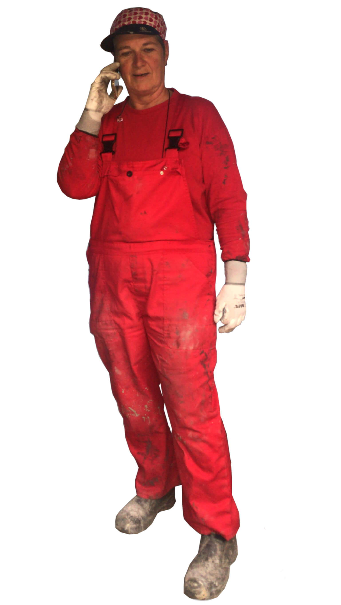

Zelf je gietvloer maken:
De Ultieme Guide In 50 Stappen (2021)
Zelf een gietvloer in je huis maken moeilijk?
Dat valt best wel mee.
Een gietvloer is een erg populaire vloer die je prima zelf kunt maken.
Met deze guide lopen we alle 50 stappen één voor één bij langs.
Mocht je het stappenplan daadwerkelijk willen gebruiken tijdens het leggen van je gietvloer?
Dan raad ik je aan dit overzichtelijke en printbare stappenplan te gebruiken.
Wil je je eerst inlezen? Lees dan verder:
Taak 1
Het vochtgehalte van de ondergrond bepalen
Een gietvloer bestaat uit drie lagen: de primer, de gietvloer en de laklaag.
Voordat je begint met het leggen van de eerste laag tref je eerst de volgende voorbereidingen:
Benodigdheden
- Doorzichtig plastic folie van 50cm x 50cm
- Plakband

Stap 1
Plak een stuk folie op de vloer
Om een goede hechting van de ondervloer met de gietvloer te krijgen mag de ondervloer niet vochtig zijn.
Dit test je door een stuk folie (50cm2) op de grond te plakken met schilderstape.
Je kiest een plek op de vloer die wat donkerder van kleur is of waarvan je vermoedt dat het een vochtiger stuk is.
Mocht je geen specifieke plek kunnen vinden dan plak je het stuk folie (50cm2) op een willekeurige plek op de ondervloer.
Stap 2
Controleer na 12 uur op condensvorming
Je laat het stuk folie minimaal 12 uur liggen.
Als er geen condens te zien is, is er niets aan de hand en kan je zonder problemen beginnen met de volgende stap.
Als je wel condens op het stuk aantreft zal je helaas moeten wachten
met het aanbrengen van de gietvloer en het vochtprobleem eerst oplossen.
Ben je een bestaande klant van Gietvloermakers en heb je vocht aangetroffen in je vloer?
Dan kun je altijd even sparren met een van onze experts.

Benodigdheden
- Plastic zeil van 2m x 2m
- Plakband
Stap 3
Bepaal op welke plaats je straks je materialen gaat aanmaken
De mengplek is de plek waar je de producten bij elkaar mengt.
Het is belangrijk dat de mengplek zich niet op de ondervloer bevindt waarop je de gietvloer aanbrengt.
Het is niet onhandig om de mengplek te kunnen blijven bereiken tijdens het maken van de gietvloer.
Dat geldt overigens ook voor de uitgang.
Het zal niet de eerste keer zijn dat iemand zich insluit tijdens het leggen van een gietvloer.
Stap 4
Plak een groot stuk zeil op de vloer vast
Om een mengplek te maken plak je met schilderstape een plastic zeil van 2m op de grond.
Zorg ervoor dat alle producten en gereedschappen die je gaat gebruiken binnen handbereik zijn.
Taak 3
De primer aanbrengen
Een gietvloer bestaat uit drie lagen. De primer is de onderste laag.
De primer zorgt ervoor dat de gietvloer goed aan de de ondervloer kan hechten.
Het is de lijm die de ondervloer en de gietvloer op elkaar houdt.
De primer is trouwens het enige deel van een gietvloer die niet uit natuurlijke materialen bestaat.
De andere drie lagen zijn dus van duurzame materialen gemaakt.
Daarmee leg je dus een behoorlijk milieuvriendelijke vloer.
Dat is mooi meegenomen.
Benodigdheden
- Boormachine
- Mengspiraal
- Vlakke spaan
- Kwast
- Schrapmassa E
- Handschoenen
- Veiligheidsbril
- Kniebeschermers
- Reinigingsdoekjes


Stap 5
Ruim het afval op
Voordat je begint met het leggen van de eerste laag ruim je eerst de rotzooi op.
Bij het maken van een gietvloer (en bij veel andere dingen) is het belangrijk om opgeruimd te werken.
De materialen zijn plakkerig en je wilt geen rotzooi in de nieuwe gietvloer hebben.
Stap 6
Bepaal waar je wilt beginnen met aanbrengen en waar je wilt eindigen
Zorg er altijd voor om de plek waar je begin met het leggen van de gietvloer af te laten hangen van de uitgang.
Begin aan de linkerkant als de uitgang zich aan de rechterkant van de ruimte bevindt en andersom.
Als de uitgang zich in het midden van de ruimte bevindt begin dan aan de beide zijkanten met leggen.
Dan werk je dus aan twee kanten tegelijkertijd naar het midden toe.
Stap 7
Doe je handschoenen, bril en kniebeschermers aan
Het polyurethaan-materiaal waar de gietvloer van gemaakt is hecht zich ontzettend goed aan je huid.
Het blijft er een lange tijd aan vast zitten.
We raden je aan om jezelf goed af te schermen voordat je begint met werken.
Zelf kiezen we voor een overal, kniebeschermers en handschoenen met daaroverheen overhandschoenen.
Stap 8
Maak per keer 1 set aan
De materialen zitten in verzegelde blikken.
Om te beginnen moet je de zegels los knippen.
Dit gaat het handigst met een knijptang.
Let er op dat de zegel er helemaal uit wordt getrokken en direct wordt weggegooid.
Dan weet je zeker dat je ze later niet terugvindt in de vloer.
Het kan zijn dat er stof of andere rommel op de deksel van een van de blikken ligt.
Als dat zo is zorg je ervoor dat je het deksel voorzichtig verwijdert, zodat de rommel niet in het materiaal kan vallen.
Aan de onderkant van de deksel zit altijd wat materiaal.
Onze tip is om het deksel altijd op het plastic van de mengplek te leggen en niet op de vloer.
Stap 9
Giet component B bij component A in het blik
Giet nu het materiaal uit blik B bij het materiaal uit blik A.
Laat blik B rustig uitlekken, zodat blik B goed leeg is.
Stap 10
Doe de mengspiraal in de boormachine en meng de inhoud van het blik 3 minuten lang door elkaar
Maak ondertussen de boor klaar door de mengspiraal in de boormachine te bevestigen.
Meng de materialen gedurende 3 minuten door elkaar.
Stap 11
Giet een rilletje van c.a. 4 cm breed uit over de vloer parallel aan de muur en 1 meter uit de kant
Begin met het verdelen van de inhoud van het blik over de gietvloer door een rilletje/strook van 4 cm breed uit te gieten over de vloer.
Begin ongeveer 1 meter uit de kant.
Je hoeft de inhoud van de emmer niet in een keer te legen.
Hoeveel materiaal je uitgiet voor de eerste ril hangt af van de lengte van de muur.
Hoe langer de muur hoe meer materiaal je gebruikt voor de eerste ril.
Stap 12
Breng het mengsel met de spaan aan
Bij het aanbrengen van de primer is het belangrijk om het mengsel schrapend aan te brengen.
Zorg er dus voor dat je spaan de ondergrond blijft raken tijdens het uitspanen van het materiaal.
Je kan horen dat je het goed doet doordat er een schrapent geluid ontstaat.
Stap 13
Houd de spaan 45 graden schuin ten opzichte van de vloer
Door de spaan in een hoek van 45 graden te houden zorg je ervoor dat de spaan contact houdt met de ondergrond.
Bij het uitspanen van de gietvloer is dit juist niet de bedoeling.
Dan zorg je ervoor dat de spaan de grond niet raakt en als het ware op het materiaal blijft drijven.
Daarover verderop in dit artikel meer.
Stap 14
Spaan de massa uit met een lichte druk op de spaan. Zorg voor een glad resultaat. Voorkom rillen.
Probeer het materiaal zo evenredig mogelijk te verdelen.
Dit doe je door het materiaal met een lichte druk uit te spanen.
Probeer vloeiende bewegingen te maken.
Let erop dat het materiaal dus overal met dezelfde druk op de spaan verdeeld wordt.
Stap 15
Reinig de spaan met de reinigingsdoekjes
Wanneer je klaar bent met het aanbrengen van de primer maak je de spaan schoon.
Dat gaat het beste met reinigingsdoekjes, maar een droge tissue werkt ook.
Stap 16
Doe als allerlaatste je handschoenen uit
Gezien het epoxy materiaal sterk aan je huid hecht raden we je aan om je handschoenen tot op het laatste moment aan te houden.
Stap 17
Laat al het afval staan op de mengplek
Omdat de materialen aan het einde van de dag nog niet zijn uitgehard is het verstandig om alle afval te laten liggen tot de volgende ochtend.
Zo heb je een kleinere kans dat het materiaal toch nog ergens op terecht komt waar je het niet wilt hebben.
Stap 18
Opdrogen
Zorg ervoor dat de primer goed opdroogt voordat je aan de volgende laag gaat beginnen (ongeveer 12 uur).
Let er ook op dat de primer niet langer opdroogt dan 24 uur.
Als je langer wacht dan hecht de volgende laag niet meer.
Benodigdheden
- Boormachine
- Mengspiraal
- Vlakke spaan
- Kwast
- Gietvloer PU
- Schone 12 liter emmer
- Handschoenen
- Veiligheidsbril
- Kniebeschermers
- Schone bezemsteel (alleen bij betonlook)
- Reinigingsdoekjes
Stap 19
Ruim het afval van gisteren op
s’Ochtends is het materiaal dat je gisteren hebt gebruikt opgedroogd.
Gooi alles wat je niet meer hoeft te gebruiken in de vuilniszak.
Stap 20
Bepaal waar je wilt beginnen met aanbrengen en waar je wilt eindigen
Trek je beschermende kleding weer aan.
Zorg dat je huid overal afgedekt is.
Trek bijvoorbeeld je sokken over je broekspijpen en je (onder)handschoenen over je mouwen.
Stap 21
Doe je handschoenen, bril en kniebeschermers aan
Bij het aanbrengen van de primer heb je al bekeken wat de handigste plek is om te beginnen met het leggen van de gietvloer.
Let er vooral op dat je mezelf niet insluit tijdens het leggen van de gietvloer.
Als de uitgang zich in het midden van de ruimte bevindt begin dan aan twee kanten tegelijk.
Eindig dan in het midden van de ruimte in het verlengde van de uitgang.
Stap 22
Maak per keer 1 set aan
Omdat het materiaal redelijk snel uithardt maak je 1 set per keer aan.
Dat wil zeggen dat je 1 emmer met component B en 1 emmer met component A pakt.
Stap 23
Giet component B bij component A in het blik
Bij het mengen van de twee componenten is het allereerst belangrijk om de deksels er voorzichtig af te halen.
Omdat je het sealtje niet terug wilt vinden in je gietvloer, gooi het sealtje direct in de vuilniszak zodra je het eraf heb geknipt.
Het kan nog wel eens voorkomen dat er stof, zand of andere rotzooi bovenop een deksel ligt.
Zorg ervoor dat je het deksel altijd recht houdt wanneer je het er af haalt.
Zo voorkom je dat er rotzooi in de gietvloer terecht komt.
Zorg ervoor dat je het blik van component B goed uit laat lekken in het blik van component A.
Het is belangrijk dat de verhouding van het mengsel goed blijft.
Daarnaast is het zonde om het materiaal weg te gooien.
Stap 23A
Voor betonlook: Herhaal stap 4.5 voor beide kleuren apart
Wanneer je voor een betonlook kiest ontvang je twee kleuren in plaats van één kleur.
In dat geval giet je voor beide kleuren component B bij component A in het blik.
Stap 24
Doe de mengspiraal in de boormachine en meng de inhoud van het blik 3 minuten lang door elkaar
Doe de mengspiraal in de boormachine en meng component A en B 3 minuten door elkaar heen.
Let erop dat het een egale massa wordt.
Stap 25
Giet het mengsel over in een schone emmer en meng nogmaals 1 minuut
Voordat je begint met uitrollen giet je het mengsel over in een schone emmer en meng je het nog een keer 1 minuut door met de mengspiraal.
Gebruik een schone emmer om te voorkomen dat er nog component A of B aan de rand van het blik zit.
Bij het verplaatsen van het blik kan het materiaal dan op de vloer gaan lekken. Met een schone emmer voorkom je dit.
Stap 25A
Voor betonlook: Herhaal stap 23 en 24 voor beide kleuren apart
Voordat je begint met uitrollen giet je het mengsel over in een schone emmer en meng je het nog een keer 1 minuut door met de mengspiraal.
Gebruik een schone emmer om te voorkomen dat er nog component A of B aan de rand van het blik zit.
Bij het verplaatsen van het blik kan het materiaal dan op de vloer gaan lekken. Met een schone emmer voorkom je dit.
Stap 25B
Voor betonlook: Giet van beide kleuren een gelijke hoeveelheid in een derde schone emmer
Voor een betonlook giet je vervolgens de eerste kleur bij de tweede kleur in een schone emmer.
Zorg ervoor dat de emmer voor de helft gevuld is met de eerste kleur en voor de andere helft gevuld is met de tweede kleur.
Stap 25C
Voor betonlook: Meng de beide kleuren onvolledig door elkaar met een schone bezemsteel
Voor de betonlook meng je de twee kleuren in de emmer met een schone bezemsteel door elkaar.
Gebruik dus geen mengspiraal zoals bij de monolook.
Zorg ervoor dat de twee kleuren met de schone bezemsteel dusdanig gemengd zijn dat het een egaal geheel is waarbij je nog duidelijk de aparte kleuren kan herkennen.
Stap 26
Giet een rilletje van c.a. 5 cm breed uit over de vloer parallel aan de muur en 15 cm uit de kant
Begin met het aanbrengen van het gemengde materiaal door een rilletje van 5 cm vanuit de emmer uit te gieten, parallel langs de muur.
Doe dit ongeveer 15 cm uit de kant. Hoeveel materiaal je nodig hebt hangt van de lengte van de vloer af.
Hoe langer de muur des te meer materiaal je gebruikt voor de eerste ril.
Stap 27
Breng het mengsel met de spaan aan
Bij het aanbrengen van de gietvloer is het belangrijk om de spaan op het materiaal te laten drijven bij het uitspanen.
In tegenstelling tot de primer zorg je ervoor dat je zo min mogelijk over de ondervloer schraap.
Je kan horen dat je het goed doet als je geen schraapgeluiden hoort tijdens het uitsmeren.

Stap 28
Houd de spaan vlak ten opzichte van de vloer. Laat de spaan drijven op het materiaal
Je zorgt ervoor dat je het materiaal uitspaant door het materiaal licht met de spaan van bovenaf uit te smeren.
Doe dit in vloeiende bewegingen.
Stap 29
Spaan de massa uit zonder druk op de spaan. Zorg voor een goede verdeling
Als je het goed doet is het materiaal op alle plekken zoveel mogelijk evenredig verdeeld.
Het heeft overal een gelijke dikte.
Stap 30
Voorkom dikke en dunne plekken
Je kan zien of het goed gaat wanneer er geen plekken zijn waar het uitgespaande materiaal donkerder van kleur is.
Daar is het materiaal dan te dik verdeeld.
Stap 31
Giet nu telkens de volgende ril aansluitend uit en verdeel het materiaal met de spaan
Wanneer je de eerste ril heb uitgespaand giet je de volgende ril parallel aan de vorige ril uit.
Verdeel het materiaal vervolgens op dezelfde manier als de eerste ril.
Stap 32
Zorg dat het materiaal "nat in nat" aansluit
Zorg ervoor dat het materiaal van de nieuwe ril uitgespaand wordt voordat de vorige ril is opgedroogd.
Dan vermengen de materialen zich goed en krijg je een mooi egaal eindresultaat.
Stap 33
Reinig de spaan met de reinigingsdoekjes
Zodra je het laatste deel van gietvloer hebt aangebracht, reinig dqn direct de spaan. Zelf gebruiken we het liefst reinigingsdoekjes.
Als je te lang wacht met het schoonmaken van de spaan droogt het materiaal op en is je spaan de volgende dag vies.
Stap 33
Laat al het afval staan op de mengplek
Laat het afval staan voor de volgende dag zodat je alle afval opgedroogd weg kan gooien.
Taak 5
De laklaag aanbrengen
Nadat de gietvloer is aangebracht is het tijd voor de laatste laag: de laklaag.
Benodigdheden
- Boormachine
- Mengspiraal
- Kwast
- Lak PU
- Schone 12 liter emmer
- Schuurpapier 220 korrel
- Microvezel roller 25 cm
- Beugel voor microvezel roller 25 cm
- Stok voor beugel
- Handschoenen
- Veiligheidsbril
- Kniebeschermers
- Reinigingsdoekjes
Stap 34
Ruim het afval van gisteren op
Het afval van gisteren is mooi opgedroogd en kan dus worden weggegooid zonder dat het materiaal overal aan blijft plakken.
Stap 35
Beloop de vloer alleen op je sokken
De gietvloer is redelijk uitgehard, maar nog wel gevoelig voor beschadigingen.
Beloop de gietvloer dan ook alleen met sokken.
Stap 35
Schuur kleine pukkeltjes en dergelijke glad met het schuurpapier
Om de gietvloer zo strak mogelijk te krijgen inspecteer je hem op pukkeltjes en andere kleine oneffenheden.
Gebruik schuurpapier korrel 220 om de oneffenheden glad te schuren.
De eerste keer dat we dit zelf deden dachten we dat we de vloer onherstelbaar hadden beschadigd, maar dat bleek mee te vallen.
Het schuren laat flinke schuurplekken achter, maar deze zijn na het lakken niet meer te zien.
Stap 36
Bepaal waar je wilt beginnen met aanbrengen en waar je wilt eindigen
Kies voor het aanbrengen van de laklaag een handige plek om te beginnen.
Net als bij de primer en gietvloer is het belangrijk je beginplek zo te kiezen dat je jezelf uiteindelijk niet insluit.
Een nacht doorbrengen in een hoekje van onze woonkamer of keuken lijkt ons persoonlijk niet heel leuk.
Stap 37
Doe je handschoenen, bril en kniebeschermers aan
Ook bij het aanbrengen van de laklaag is het belangrijk om je huid goed af te schermen.
Stap 38
Maak de hele set lak in 1 keer aan
Gebruik al het lakmateriaal om één emmer lak aan te maken.
Stap 39
Giet component B samen met component A in een schone emmer
Giet de twee componenten direct in een schone emmer.
De primer- en gietvloercomponenten giet je eerst bij elkaar in het blik om ze vervolgens in de emmer nogmaals te mengen met de mengspiraal.
Voor de lak is dat niet nodig.
Stap 40
Doe de mengspiraal in de boormachine en meng de inhoud van de emmer 1 minuut lang door elkaar
Meng de twee componenten in een schone emmer gedurende 1 minuut door elkaar met de mengspiraal.
Het is belangrijk dat beide producten goed met elkaar vermengd zijn en een egale massa vormen.
Stap 41
Het afwerken van de randen doe je met de kwast, de rest van de vloer met de roller.
Om de lak aan de kanten aan te brengen gebruik je een kwast.
Dat maakt het eenvoudiger om de lak netjes aan te brengen op de vloer en Zorgt ervoor dat de muur of de plinten niet ook een nieuwe laklaag krijgen.
Naast de randen breng je de rest van lak aan met een roller.
Zorg ervoor dat het afwerken van de kanten en het aanbrengen van de rest gelijk met elkaar oploopt.
Dat wil zeggen dat je het aanbrengen van de kanten met de kwast en het aanbrengen van de de rest van de vloer met de roller met elkaar afwisselt.
Stap 42
Giet een rilletje van c.a. 2 cm breed uit over de vloer parallel aan de muur en 1 meter uit de kant
Begin met het aanbrengen van de lak door de randen met de kwast aan te brengen.
Daarna rol je een rolletje van ongeveer 2 cm uit parallel langs de muur waar je zojuist de lak met de kwast hebt aangebracht.
Giet het rilletje ongeveer 1 meter vanaf de muur.
Stap 43
Rol de lak uit haaks op het rilletje
Rol de lak met de roller haaks uit ten opzichte van het rilletje.
Stap 44
Maak telkens een vak van 2 meter bij 2 meter
Per rilletje maak je een vak van ongeveer 2 meter bij 2 meter.
Het vak moet niet te groot worden, omdat de lak anders opdroogt voordat het volgende rilletje wordt uitgerold.
Stap 45
Rol de zojuist aangebrachte lak nogmaals haaks door
Om de lak goed te verdelen rol je de lak twee keer uit.
Dit keer in de richting haaks op de richting waarin je de lak de eerste keer hebt uitgerold.
Stap 46
Zorg ervoor dat de vakken "nat in nat" op elkaar aansluiten
Het is belangrijk om ervoor te zorgen dat de lak niet opdroogt voordat je de nieuwe ril lak uitrolt.
Zo voorkom je dat er kleurverschillen in de lak ontstaan.
Stap 47
Haal, als je klaar bent, de roller van de beugel
Als je klaar bent kun je de roller van de beugel halen en deze weg leggen op het plastic van de mengplek.
Je kunt het beste wachten met opruimen tot de volgende ochtend. Dan is de lak inmiddels opgedroogd.
Stap 48
Reinig de beugels met de reinigingsdoekjes
Reinig de beugel wel alvast met een reinigingsdoekje. Dan blijft de beugel netjes en bruikbaar.
Stap 49
Laat al het afval staan op de mengplek
Het afval laat je altijd staan voor de volgende ochtend. Dan is de lak opgedroogd.
Benodigdheden
- Geen
Stap 50
Ruim het afval van gisteren op
Ruim het laatste opgedroogde afval op.
Stap 51
De vloer kan voorzichtig belopen worden
Je kunt de vloer nu voorzichtig belopen.
Omdat het uitharden van de vloer afhangt van de luchtvochtigheid raden we aan om nog een dagje extra te wachten met het belopen van de vloer.
Zelf houden we de volgende timing aan:
- na 1 dag is de vloer voorzichtig beloopbaar;
- na 2 dagen is de vloer licht belastbaar;
- na 7 dagen is de vloer chemisch totaal uitgehard.
Totdat de vloer chemisch is uitgehard is de vloer nog vatbaar voor vocht.
Mocht er binnen die periode vochtigheid op de vloer terecht komen dan kan dat leiden tot carbonisatie.
Die blijft permanent op de vloer zichtbaar in de vorm van een soort van regendruppels.
Wanneer er binnen de pakweg eerste 7 dagen vocht op de vloer komt is het belangrijk dit direct op te ruimen.